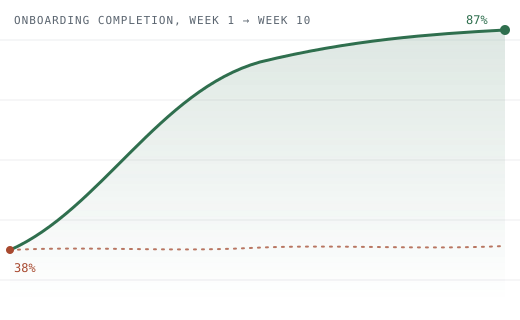
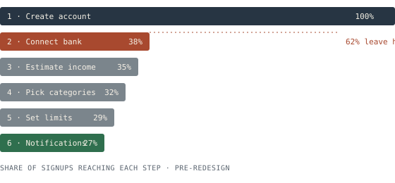

22
Interviews
One-on-one sessions with lapsed and active users, recruited from the drop-off cohort itself.
Case study — mobile budgeting app
FinTrack was losing three out of five new users before they ever saw their own budget. A research-led rebuild of the onboarding flow turned that around — and gave the wider product a design system it didn't have before.

01 · The problem
FinTrack's signup funnel asked for a bank connection, an income estimate, and three budgeting preferences — all before a new user had seen any value. Analytics across 40,000+ sessions showed the drop happened in one place: the "connect your accounts" screen, step 2 of 6.
What the funnel data showed
62% of signups never completed onboarding. Of those who dropped, 71% left within 8 seconds of reaching the bank-connection screen — long before they'd typed anything.

02 · Research
22
One-on-one sessions with lapsed and active users, recruited from the drop-off cohort itself.
5
Moderated tests on low- and mid-fidelity prototypes, three rounds before visual design started.
40k
Funnel and event-log analysis across a full quarter of signup attempts.
12
Competitive audit of onboarding patterns across the finance app category.
Core finding
Users didn't distrust bank-linking as a concept — they distrusted being asked for it before they understood what FinTrack would do with it. Every drop-off interview said a version of the same thing: "I didn't know what I was agreeing to yet."
03 · Process
Instrumented every onboarding screen, mapped the full drop-off curve, and shortlisted the eight sessions worth watching frame by frame.
Ran the interviews and competitive audit in parallel, then synthesized into three jobs-to-be-done that the new flow had to satisfy before asking for anything sensitive.
Three rounds of moderated testing, each cutting a screen or reordering a step, until first-attempt completion in the test group passed 80%.
Formalized the new flow into a reusable component set — progress pattern, consent screens, empty states — documented for engineering.
Phased rollout to 20% of new signups, watched funnel metrics daily, shipped to 100% on day six.
04 · The solution
The six-step form became a three-step flow. Bank connection moved from step 2 to step 5 — after a user had already built a sample budget and could see exactly what linking an account would fill in.
Step 1 / 6
Step 2 / 6
62% left here
Step 3 / 6
Step 4 / 6
Step 5 / 6
Step 6 / 6
Step 1 / 3
No signup yet — just play with real numbers.
Step 2 / 3
Your sample budget carries over — nothing lost.
Step 3 / 3
See exactly what it fills in before you agree.
87% complete this
05 · Results
+129%
onboarding completion
−71%
time to first budget
−64%
signup support tickets
+57%
7-day retention
"The redesign didn't just fix a screen — it changed how we think about asking users for anything. Completion held steady for two quarters after launch, no backsliding."
— Product Lead, FinTrack
Working on something similar?
I take on a small number of UX research and redesign engagements each quarter — onboarding, activation, and conversion-critical flows especially.